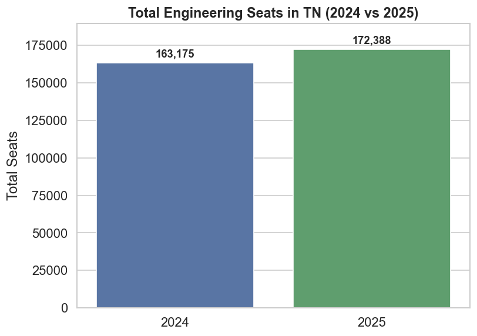
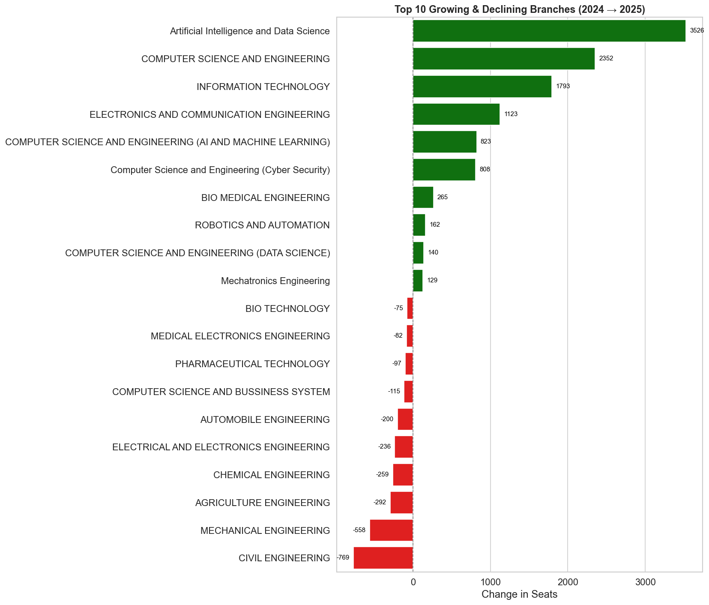
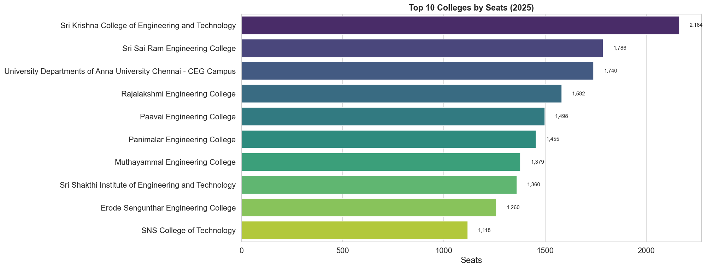
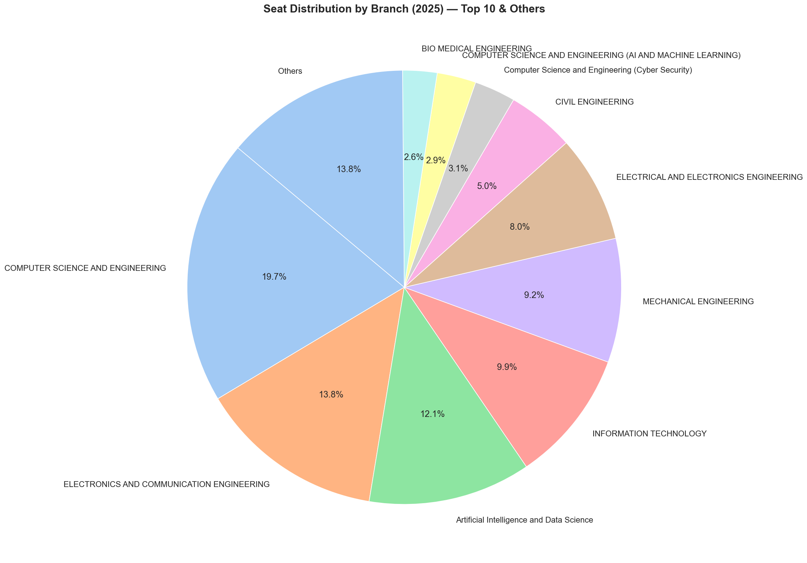
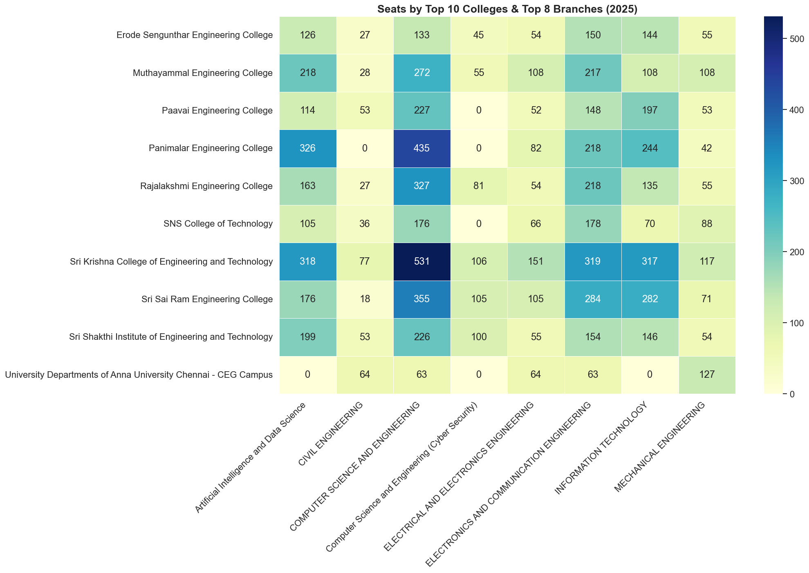

Trends in seats across branches, colleges, and years
This report presents a detailed analysis of the Tamil Nadu Engineering seat matrix data for the years 2024 and 2025. We explore how the total number of seats has changed, which branches and colleges saw the most growth and how the seats are distributed among popular branches and institutions. The goal is to uncover insights that can help students, colleges and policymakers understand current trends and make informed decisions.
We begin by looking at the overall number of engineering seats available in Tamil Nadu for the years 2024 and 2025. This gives us a sense of whether opportunities for students are expanding or contracting.
✅ The total number of engineering seats in Tamil Nadu increased by approximately 5.6%, from 163,175 seats in 2024 to 172,388 seats in 2025.
✅ This reflects growing demand and expansion in intake capacity by colleges.
✅ The increase suggests positive momentum in engineering education opportunities.
Next, we examine which branches experienced the most growth or decline between 2024 and 2025. This reflects changing demand for specific engineering disciplines.
✅ The analysis of branch-wise growth and decline between 2024 and 2025 reveals clear trends:
- The largest increase was seen in Artificial Intelligence and Data Science, with a remarkable addition of 3,526 seats.
- Traditional branches like Computer Science and Engineering and Information Technology also saw significant growth.
- On the other hand, Civil Engineering and Mechanical Engineering experienced the steepest declines, with 769 and 558 seats cut respectively.
🎯 This reflects a shift in preference towards emerging technology domains, while interest in conventional branches appears to be waning.
We now look at the colleges with the highest number of seats in 2025. These institutions continue to dominate engineering education in the state.
Sri Krishna College of Engineering and Technology leads the chart with an impressive intake of 2164 seats in 2025. It's followed by popular institutions like Sri Sai Ram Engineering College and Anna University (CEG Campus).
This ranking gives a quick glance at the biggest contributors in Tamil Nadu’s engineering admissions, with most of the top colleges clustered around Chennai and Coimbatore.
Which branches dominate the engineering landscape? This chart shows the share of seats held by each branch in 2025.
The top 10 branches account for the majority of engineering seats in 2025, with Computer Science & Engineering (CSE) leading by a significant margin, contributing about 19.7% of total seats.
Electronics & Communication Engineering (ECE) follows as the second most popular branch, accounting for approximately 13.8% of the seats.
Emerging disciplines like Artificial Intelligence & Data Science have secured a strong presence, while traditional branches retain steady shares.
All remaining branches together make up about 13.8%, grouped here as "Others" for clarity.
Finally, we explore which colleges specialize in which branches. This heatmap highlights the concentration of seats across colleges and branches in 2025.
The heatmap above highlights the seat allocation among the top 10 colleges and top 8 branches in 2025.
It reveals which colleges specialize in particular branches, and how emerging fields are gaining prominence even in established institutions.
Darker shades and higher numbers show stronger focus areas for each college.
The analysis of the 2024 - 2025 engineering seat matrix reveals clear trends shaping Tamil Nadu’s higher education landscape:
Overall, the data highlights a shift towards modern, IT-driven specializations while preserving traditional engineering domains — a balance that aligns with both industry trends and student aspirations.